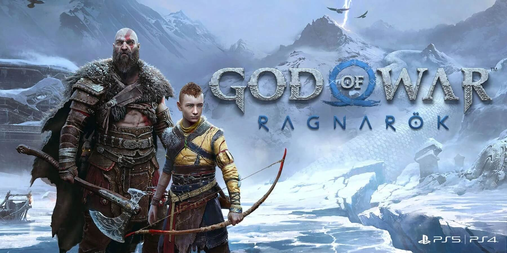
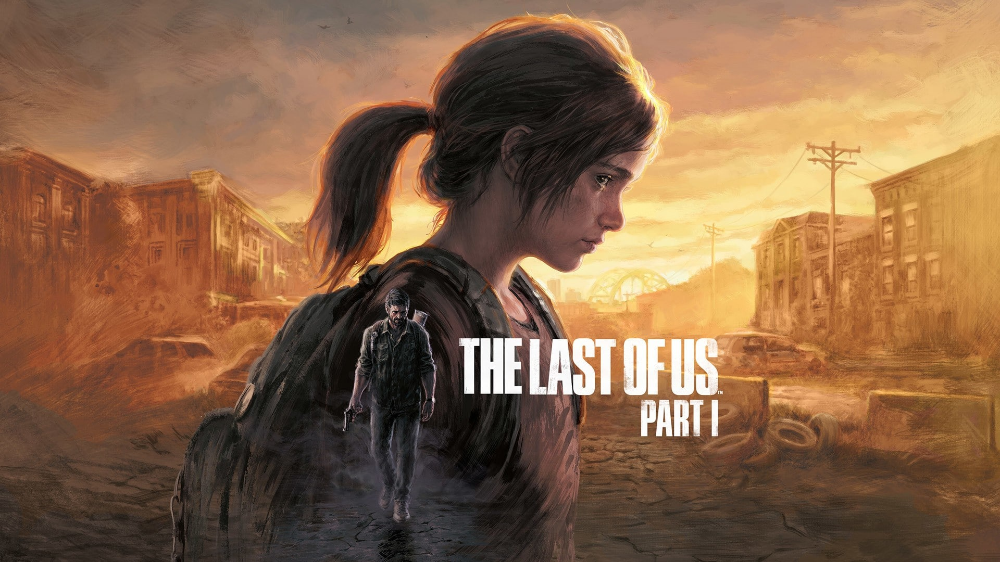
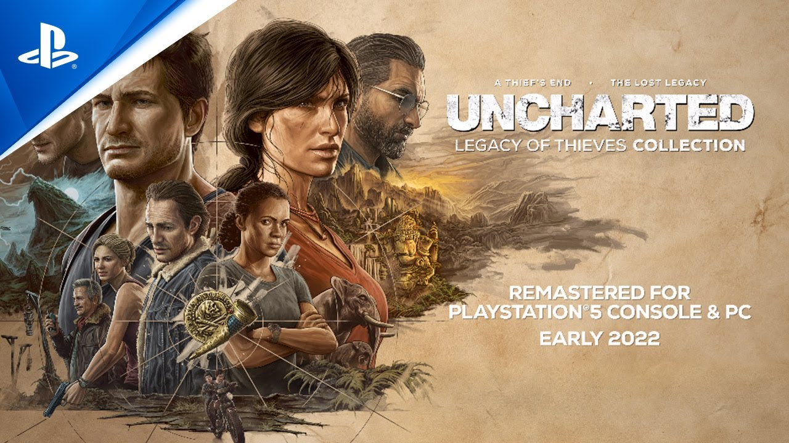
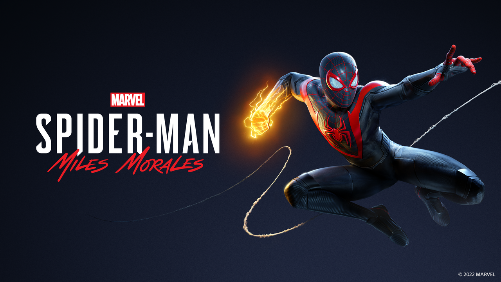

TOP 5 JOGOS PLAYSTATION
1. God of War: Ragnarök.
A espera foi longa, sabemos. God of War Ragnarok era um jogo que muitos esperavam para o lançamento do PlayStation 5, porém teve 2021 como data prevista. Depois, o jogo foi adiado "para assegurar que a Santa Monica Studio possa entregar o incrível game de God of War que todos queremos jogar", até que sua data de lançamento foi confirmada já em 2022. Eis que todos poderão jogar o game a partir do dia 9 de novembro com uma certeza: valeu a pena esperar.
Logo no início do game, antes mesmo de iniciar sua aventura com o jogo, há uma rápida recapitulação disponível no menu principal, o que é bom para refrescar a memória sobre tudo o que aconteceu no jogo anterior, ou caso essa seja sua primeira vez com a saga. Já quando entramos no que está acontecendo em Ragnarok, Kratos e Atreus têm como objetivo sobreviver ao Fimbulwinter - sequência de 3 invernos seguidos -, devido ao que aconteceu a Baldur, filho de Odin e Freya. Além disso, as cenas de abertura revelam um Atreus bem diferente de Kratos, agora mais que nunca. O jovem deus gosta de interagir com os animais, como os lobos que puxam seu trenó, sendo bastante gentil, sem falar que ele aborda situações de forma completamente diferente de seu pai. Enquanto isso, Kratos tenta aconselhá-lo com suas experiências passadas como lição nos mais diversos momentos. O jovem amadureceu muito durante o novo jogo e Ragnarok mostrará esse amadurecimento desde a primeira vez que ele fala (inclusive com a ausência da querida fala ‘garoto’, em cada lição, uma vez que Atreus não é mais uma criança). O Fimbulwinter também serve como um momento de agitação que pressagia o Ragnarok. Por isso, Kratos, durante os anos seguintes, treinou Atreus, que está mais forte e aprendendo sobre seu nome de gigante "Loki". Em paralelos, temos boas pitadas de drama adolescente, enquanto Atreus tenta convencer seu pai a confiar nele. O jogo conta com comoventes retornos de figuras carismáticas do God of War de 2018, na medida em que Kratos orgulhosamente observa Atreus provar que ele não é mais uma criança. Os temas de nossa aventura giram em torno de profecia e sacrifício, enquanto temos a oportunidade de ver cada personagem e seus motivos com o respeito e tempo que merecem. Essa é uma conclusão apropriada e grandiosa da saga nórdica de Kratos e deixa todas as arestas bem aparadas. Seja em português ou em inglês, os elencos fazem um belíssimo trabalho e colocam emoção nas falas e interpretação dos personagens. Curioso ver que alguns personagens trazem os rostos dos atores que interpretam, como Richard Schiff (de The Good Doctor) no papel de Odin ou Deborah Ann Woll (de True Blood e Demolidor) como Faye, uma pitada a mais de tempero numa receita que já estava dando certo.
link para a comprar God of war2. The Last of Us - Part 1.
Você quase tem que admirar o hedonismo de olhar para The Last of Us Remastered, que ainda é visualmente impressionante oito anos depois, e dizer: “Sim, isso parece muito bom, mas podemos fazer melhor”. Há muito pouco a ser dito sobre o The Last of Us original, um potente coquetel pós-apocalíptico de furtividade, sobrevivência e abate que é reverenciado por sua narrativa assustadora em um mundo incrivelmente bem trabalhado. Você quase certamente sabia disso. É amplamente elogiado como um dos melhores jogos de todos os tempos e um dos poucos a obter um 10 do IGN, mas acho que você sabia disso também. Na verdade, é um jogo tão legal que eles o construíram três vezes, e é aí que nos encontramos com The Last of Us Part I – agora a terceira versão da obra-prima de 2013 da Naughty Dog a chegar dentro de uma década. Sem surpresa, este remake aproveita ao máximo o poder adicional oferecido pelo PS5, o que traz novos e surpreendentes níveis de detalhes e fluidez em seu mundo, além de personagens e animações totalmente reconstruídos. Ele também é equipado com um uso sutil, porém bem considerado, do feedback háptico no controle DualSense e uma variedade simplesmente notável de opções de acessibilidade. Falta o modo multiplayer do original, no entanto o resultado é sem dúvida a forma definitiva para os jogadores solo experimentarem este clássico moderno. Mesmo assim, há algo inerentemente não essencial nisso. Afinal, como um remake de uma remasterização já fabulosa continua sendo um jogo obrigatório em hardware de apenas uma geração atrás?
Para maior clareza, The Last of Us Part I foi posicionado como uma reconstrução completa para o PS5 – um remake, e não uma remasterização. Apesar de alguma preocupação em contrário, isso parece principalmente verdade. Enquanto The Last of Us Part I apresenta dois modos de exibição - um que atinge 4K nativo a 30 quadros por segundo e outro que apresenta 4K dinâmico a 60 quadros por segundo - a Naughty Dog fez muito mais aqui do que simplesmente discar a resolução e aumentar a taxa de quadros. Em termos gerais, todos os personagens e ambientes foram totalmente refeitos, e é possível ver isso no game (ou na análise de performance logo abaixo - em inglês). Embora eu concorde que tem sido difícil ver um grande abismo entre The Last of Us Remastered de 2014 e The Last of Us Part I nas comparações de vídeo que a Sony vem postando, vou advertir que assistir a duas cutscenes juntas em um smartphone tela provavelmente não é a melhor maneira de avaliar as diferenças significativas aqui. No jogo, há definitivamente um salto evidente em fidelidade e qualidade. Optamos pelo modo de desempenho dinâmico de 4K/60FPS e desativamos o grão do filme, pois a taxa de quadros mais alta torna a câmera muito mais suave e o efeito de grão padrão honestamente faz pouco, todavia obscurece o quão bom tudo realmente parece no PS5.
link para compar the last of us:pt 13. Uncharted: Coleção Legado dos Ladrões.
Como as qualidades individuais dos dois jogos desta coletânea já foram bradadas por inúmeras análises desde os seus lançamentos originais em 2016 e 2017, respectivamente, não vou me demorar muito nesses aspectos; esta será uma análise mais focada na parte técnica de adaptação para os computadores, portanto. Ainda assim, caso você por algum motivo não conheça a saga Uncharted, aqui vai uma breve descrição da franquia e do que é possível esperar tanto no quarto jogo da saga quanto em sua expansão The Lost Legacy, ambos disponíveis nesta coleção. Criada por Amy Hennig, uma das mulheres mais influentes da indústria dos games, Uncharted é uma das séries mais longevas e também mais aclamadas dos consoles PlayStation. Desde a sua estreia com Uncharted: Drake's Fortune (PS3), a história do caçador de recompensas Nathan Drake e de suas aventuras pelo mundo ganhou vários prêmios e elogios da crítica e do público, que enxergou no jovem protagonista um carismático híbrido de Lara Croft e Indiana Jones
Concebido pela americana Naughty Dog, que logo viu seus lançamentos escalarem tanto em qualidade quanto em vendas, não gostou muito para que Nathan Drake e Uncharted se tornessem um símbolo da Sony e um ícone cultural do final dos anos 2000. Sua aceitação foi tamanha, que a saga logo se expandiu para outras mídias, como livros, quadrinhos e cinemas, com um longa-metragem estrelado por Tom Holland sendo lançado este ano. Méritos de uma franquia que sempre entregou aquilo que se comportou a fazer: games envolventes com o equilíbrio correto entre ação cinematográfica, plataforma e puzzles. Uncharted 4: A Thief's End é o ponto mais alto da saga e conclui (até agora) a saga de Nathan Drake. Já Uncharted: The Lost Legacy traz uma aventura menor em duração e escala, protagonizada pelas caçadoras de recompensas Chloe Frazer e Nadine Ross. Mesmo anos após seus lançamentos originais, ambos os títulos conservam seu poder de impactar o jogador, oferecendo horas e mais horas de diversão com momentos épicos, reviravoltas e tudo o que se pode esperar de produções AAA da Sony. Não se engane: a verdade nua e crua é que, anos depois, pouquíssimos jogos lançados superam a qualidade desses dois jogos. Portanto, a chegada de Legado dos Ladrões ao PC, ainda que tardia, deve ser muito comemorada.
link para comprar uncharted:coleção legado dos ladrões4. Horizon Forbidden West.
As sequências bem-sucedidas se baseiam em seus predecessores de várias maneiras – pense em Mass Effect 2 , Assassin's Creed 2 e Uncharted 2 . Todos eles aprimoram o que veio antes deles, criando novas e emocionantes mecânicas de jogo, desenvolvendo personagens por meio de histórias envolventes e mudando o design da missão para oferecer variedade. Em outras palavras, eles pegam uma base sólida e combinam com novos elementos para criar ligações mais avançadas, como uma liga… ou neste caso, uma Aloy. Horizon Forbidden West faz isso com desenvoltura, construindo sobre as já impressionantes fundações de Horizon Zero Dawn de 2017.para contar uma história emocionante cheia de familiar combate explosivo contra elaborados inimigos robóticos e sequências de ação de grande sucesso, mas também adicionando assentamentos do tipo Witcher ao mapa e preenchendo-o com grandes missões secundárias. Há um senso genuíno de exploração e muito conhecimento completamente envolvente por trás de tudo para descobrir. O resultado é uma fantástica aventura de ação em mundo aberto que, apesar de cair em alguns de seus velhos hábitos, cumpre enfaticamente as promessas feitas cinco anos atrás. A batalha entre o natural e o antinatural está em toda parte no Oeste Proibido. Ele detalha em muitos níveis o que é a série Horizon, desde as vinhas estrangulando os restos da ponte Golden Gate de São Francisco até as máquinas feitas pelo homem semelhantes a animais que vagam pela terra, seguindo os passos de seus criadores mortos há muito tempo. . Mas esse confronto também ocorre dentro de Aloy, que (spoilers do primeiro jogo) é ela mesma uma complicada combinação de vida humana e sintética. É o que impulsiona o enredo e dá um toque pessoal ao que poderia ser um tema desajeitado se tratado sem o cuidado óbvio que o desenvolvedor Guerrilla Games colocou em Forbidden West.

Pegue o poder de volta Mais uma vez, Aloy está em uma missão sensível ao tempo repleta de mistério, principalmente em seus personagens, muitos dos quais estão firmemente estabelecidos na área cinzenta entre amigo ou inimigo. Suas reviravoltas são inúmeras e me fizeram adivinhar como seria até o final da jornada de Aloy. Essa jornada não é curta; minha jogada (que foi feita em um ritmo bastante relaxado que incluiu a conclusão de uma boa quantidade de missões secundárias) levou cerca de 32 horas. Guerrilla definitivamente aprendeu uma lição desta vez quando se trata de encontrar um equilíbrio entre a construção do mundo e contar uma história coerente. Horizon Zero Dawn abordou algumas ideias grandes e ambiciosas, mas às vezes tropeçava quando se tratava de transmiti-las de maneira envolvente, com uma dependência excessiva de arquivos de áudio e textoencontrados em laboratórios sem vida e escritórios abandonados. Com o palco agora firmemente montado, Forbidden West é capaz de caminhar com confiança sobre os profundos buracos de exposição dos quais Zero Dawn às vezes foi vítima, (principalmente) misericordiosamente evitando longos despejos de informações em favor de uma história contada com mais elegância. Embora ainda haja uma quantidade decente de registros de áudio para encontrar, a qualidade deles é muito melhorada e, mais importante, desta vez todos os momentos-chave da história são contados por meio de cenas envolventes que contêm seu quinhão de drama centrado no personagem sem morando nele por tempo suficiente para ultrapassar suas boas-vindas.
link para comprar horizon Forbidden West5. Marvel's Spider-Man Miles Morales - Edição Ultimate.
Marvels Spider-Man Miles Morales não é propriamente uma sequência direta de Marvel’s Spider-Man. Funciona como uma espécie de expansão do universo, exatamente como foi Uncharted The Lost Legacy para Uncharted 4: A Thief’s End. Mas calma: não o julgue como um simples DLC. É um jogo completo, com boa narrativa, ótimos gráficos, gameplay dinâmico e recheado de atividades secundárias que incrementam sua longevidade. O grande diferencial é poder sentir, ver e ouvir a nova geração. Jogar suas teias por Manhattan nunca foi tão bonito, veloz e satisfatório. É um excelente cartão de visitas para o PlayStation 5 e um dos jogos que você tem que ter na sua biblioteca inicial.
Seja você mesmo! E não há como falar dele sem revelar um pouquinho do jogo de 2018. Portanto, se você ainda não experimentou o percursor de MileMorales, é bom tomar distância deste conteúdo. O jogo começa trazendo um pequeno retrospecto dos acontecimentos finais do último game, explicando como Miles Morales “ganhou” seupoderes de Homem-Aranha após a morte de seu pai. E a história aposta bastante nessa linha, dando mais profundidade ao personagemexplorando seu passado recente, relacionamentos, amizades e dificuldades enfrentadas.Mas há pouco tempo para digerir todas amudanças. A vigilância de Manhattan acaba caindo no seu colo quando Peter, seu mentor, tem de fazer uma viagem para Europa. Cabe ajovem vestir o traje de Aranha e defender a cidade de muitos perigos, talvez bem maiores que sua experiência. A história se constrói assim: Miles descobrindo suas habilidades ao mesmo tempo em que tenta se firmar como um novo Spider-Man. não é fácil. Afinal, substituir Peter Parker deixa um peso nas costas do garoto. Os próprios moradores questionam se esse novHomem-Aranha defenderá os cidadãos tão bem quanto o primeiro. No meio de tantas incertezas, Morales ainda se vê envolvido em um conflito com pessoas queridas, revelações inesperadas e o dilema de qual lado ficar no meio de tantas coisas. E como toda criação do universo Marvel, rostinhos dos quadrinhos aparecem no jogo, mas em uma escala muito menor, quando comparado com Marvel’s Spider-Man. Isso pode acabar frustrando alguns fãs. Não há tantas aparições ou momentos tão simbólicos. O jogo é menor – por volta de 8h a 10em contar as atividades secundárias – em narrativa. Não há filler ou toneladas de fan service. Mesmo assim, ele desenrola suhistória muito bem, com início, meio e fim dignos, até emocionantes. Se cumpre um bom papel na narrativa, a localização brasileira ainda conta com… digamos… características esquisitas. Algumas davozes mudaram, a dublagem ainda insiste em não localizar os nomes dos heróis e vilões e a sincronização labial está atrasada.
link para comprar o jogo Marvel's Spider-Man Miles Morales - Edição Ultimate.